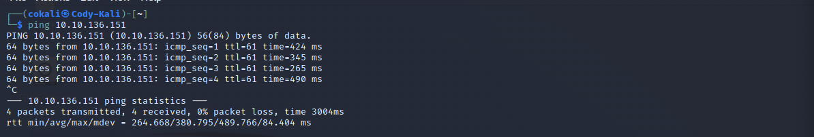

The Source room on TryHackMe is an "Easy" level ctf, where you are "Exploiting a recent vulnerability and hacking Webmin, as web-based system configuration tool". The realistic feel of the room makes it a great starter box for new members that are looking to get their feet wet.
